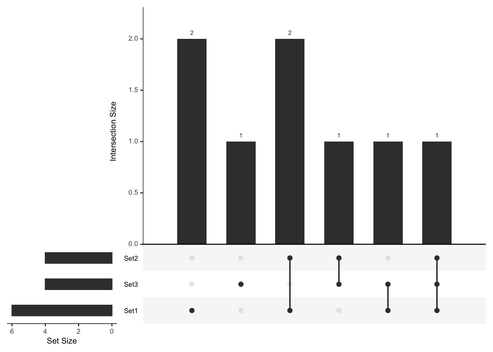

UpSetR
UpSetR是一个R包，旨在用于分析和可视化复杂的集合交集，提供了一种比传统文氏图更加清晰和信息丰富的方式来展示集合之间的交集和唯一元素。
首先，确保你已经安装了UpSetR包。如果没有，请运行以下命令来安装：
install.packages("UpSetR")安装完成后，加载UpSetR包以便使用：
准备数据
UpSetR可以处理不同格式的数据，包括列表、数据框或矩阵。这里，我们以一个简单的例子开始，展示包含几个集合的列表：
# 创建示例数据 <- list (Set1 = c (1 , 2 , 3 , 5 , 7 , 8 ),Set2 = c (2 , 3 , 4 , 7 ),Set3 = c (3 , 4 , 5 , 6 )
创建UpSet图
使用upset函数，我们可以基于上述数据创建一个UpSet图：
upset (fromList (list_input), order.by = "freq" )
这个命令将生成一个UpSet图，其中包含了三个集合Set1、Set2和Set3的交集情况。order.by = "freq"参数意味着交集将根据频率（大小）进行排序。
定制UpSet图
UpSetR提供了多种定制选项，以适应不同的分析需求和视觉偏好。
改变集合和交集的排序
你可以根据需要改变集合和交集的排序方式，例如，根据集合大小或名称排序：
upset (fromList (list_input), sets = c ("Set3" , "Set1" , "Set2" ))
调整图表元素
你还可以选择性地显示或隐藏图表的不同组成部分，例如，仅显示交集的大小：
upset (fromList (list_input), main.bar.color = "skyblue" , matrix.color = "blue" , order.by = "freq" , show.numbers = "yes" )
分析数据框中的集合
除了列表，UpSetR也可以直接处理数据框格式的数据。以下是如何使用数据框来创建UpSet图的例子：
# 创建示例数据框 <- data.frame (ID = c (1 : 6 ),Set1 = c (1 , 1 , 0 , 0 , 1 , 0 ),Set2 = c (1 , 1 , 1 , 0 , 0 , 1 ),Set3 = c (0 , 1 , 1 , 1 , 0 , 0 )# 使用数据框创建UpSet图 upset (as.data.frame (df_input), sets = c ("Set1" , "Set2" , "Set3" ))
streamgraph
streamgraph是一个基于htmlwidgets和d3.js的R包，它允许用户在R中创建交互式的流图。流图是一种美观的数据可视化方式，适合展示数据随时间的流动和变化。
streamgraph包可能不在CRAN上直接可用，因此你需要使用devtools包从GitHub安装它：
# 从GitHub安装streamgraph
devtools::install_github("hrbrmstr/streamgraph")安装完成后，加载streamgraph包以便使用：
准备数据
streamgraph要求数据以特定格式提供：一个数据框，其中包含至少三个列，分别代表时间（或日期）、类别和数值。
# 创建示例数据 <- data.frame (date = rep (seq (as.Date ("2020-01-01" ), as.Date ("2020-12-31" ), by= "month" ), 3 ),category = rep (c ("Category 1" , "Category 2" , "Category 3" ), each= 12 ),value = rnorm (36 , mean= 100 , sd= 20 )
创建流图
使用streamgraph函数，你可以基于上述数据创建一个流图。以下是创建基本流图的代码：
streamgraph (data, key= "category" , date= "date" , value= "value" )## Warning in widget_html(name, package, id = x$id, style = css(width =
## validateCssUnit(sizeInfo$width), : streamgraph_html returned an object of class
## `list` instead of a `shiny.tag`.## Warning: `bindFillRole()` only works on htmltools::tag() objects (e.g., div(),
## p(), etc.), not objects of type 'list'.
这个命令将生成一个流图，显示每个类别随时间变化的数值。
定制流图
streamgraph提供了多种定制选项，让你可以根据需求调整流图的外观和行为。
调整宽度和高度
你还可以调整流图的宽度和高度，以适应不同的显示需求：
streamgraph (data, key= "category" , date= "date" , value= "value" , width= "100%" , height= "600" )## Warning in widget_html(name, package, id = x$id, style = css(width =
## validateCssUnit(sizeInfo$width), : streamgraph_html returned an object of class
## `list` instead of a `shiny.tag`.## Warning: `bindFillRole()` only works on htmltools::tag() objects (e.g., div(),
## p(), etc.), not objects of type 'list'.
导出和嵌入
生成的流图是交互式的，可以直接在RStudio的Viewer窗口中查看，也可以导出为HTML文件或嵌入网页中。
# 导出为HTML
sg <- streamgraph(data, key="category", date="date", value="value")
htmlwidgets::saveWidget(sg, "streamgraph.html")为了创建一篇面向有一定基础的用户的、注重实用性的、全面介绍wordcloud2包及其应用的教程，下面将以Markdown格式详细介绍如何使用wordcloud2包来创建和定制词云。
wordcloud2
wordcloud2是一个R包，允许用户创建交互式词云。这种词云可以直观地展示文本数据中词汇的频率，其中词的大小表示其在数据集中的相对重要性或频率。wordcloud2基于htmlwidgets和JavaScript库，因此生成的词云可以嵌入R Markdown文档或Shiny应用中，并支持交互性功能。
安装和加载
首先，确保你已经安装了wordcloud2包。如果没有，请运行以下命令来安装：
install.packages("wordcloud2")安装完成后，加载wordcloud2包以便使用：
准备数据
wordcloud2函数需要一个数据框作为输入，该数据框包含两列：一列是单词（word），另一列是频率（freq）。
# 创建示例数据 <- data.frame (word = c ("R" , "Data" , "Visualization" , "wordcloud" , "Analysis" , "Shiny" , "HTMLWidgets" , "Interactive" ),freq = c (100 , 60 , 30 , 90 , 20 , 50 , 80 , 40 )
创建词云
使用wordcloud2函数，你可以基于上述数据创建一个词云：
这个命令将生成一个词云，其中包含了我们的示例数据集中的词汇。
定制词云
wordcloud2提供了多种定制选项，让你可以根据需求调整词云的外观和行为。
改变形状
你可以通过设置shape参数来改变词云的形状，wordcloud2支持多种形状，如circle、cardioid（心形）、diamond、triangle-forward、triangle、pentagon、star等。
wordcloud2 (words_data, shape = 'star' )
设置颜色
通过color参数，你可以自定义词云中词汇的颜色：
wordcloud2 (words_data, color = 'random-light' )
调整大小和旋转
使用minSize和rotateRatio参数来调整词汇的最小大小和旋转比例：
wordcloud2 (words_data, minSize = 0.5 , rotateRatio = 0.5 )
为了创建一篇面向有一定基础的用户的、注重实用性的、全面介绍ggridges包及其应用的教程，下面将以Markdown格式详细介绍如何使用ggridges包来创建和定制山脊线图（Ridgeline Plots），一种用于展示分布变化的优美图形。
ggridges
ggridges包是ggplot2的扩展，提供了一种创建山脊线图（也称为joy plots）的方法。山脊线图是展示一组分布的有效方式，尤其适合展示随某一变量（通常是时间）变化的多个分布。
首先，确保你已经安装了ggridges包。如果没有，请运行以下命令来安装：
install.packages("ggridges")安装完成后，加载ggridges包以便使用：
准备数据
ggridges包与ggplot2紧密集成，因此你需要准备一个适合ggplot2的数据框。这里，我们以一个简单的示例数据集开始：
# 加载ggplot2包 library (ggplot2)# 创建示例数据 set.seed (123 )<- data.frame (group = rep (c ("A" , "B" , "C" ), each= 100 ),value = c (rnorm (100 , mean= 0 , sd= 1 ), rnorm (100 , mean= 2 , sd= 1.5 ), rnorm (100 , mean= - 1 , sd= 2 ))
创建山脊线图
使用ggridges创建山脊线图的基本方法如下：
ggplot (data, aes (x = value, y = group)) + geom_density_ridges ()## Picking joint bandwidth of 0.502
这段代码将为每个组创建一个山脊线图，其中group为不同的山脊线，value代表分布的数据。
定制山脊线图
ggridges提供了多种选项来定制山脊线图，包括调整颜色、填充、透明度等。
调整颜色和填充
你可以通过aes函数的fill参数为不同的山脊线指定颜色：
ggplot (data, aes (x = value, y = group, fill = group)) + geom_density_ridges_gradient (scale = 3 )## Picking joint bandwidth of 0.502
更改山脊线的外观
使用geom_density_ridges函数的参数来调整山脊线的外观，例如线条粗细、透明度等：
ggplot (data, aes (x = value, y = group, fill = group)) + geom_density_ridges (alpha = 0.8 , scale = 3 , rel_min_height = 0.01 )## Picking joint bandwidth of 0.502
使用主题和标签
为了提高图表的可读性和美观性，你可以添加标题、坐标轴标签，并使用ggplot2的theme功能定制图表主题：
ggplot (data, aes (x = value, y = group, fill = group)) + geom_density_ridges_gradient () + labs (title = "Ridgeline Plot" , x = "Value" , y = "Group" ) + theme_ridges ()## Picking joint bandwidth of 0.502